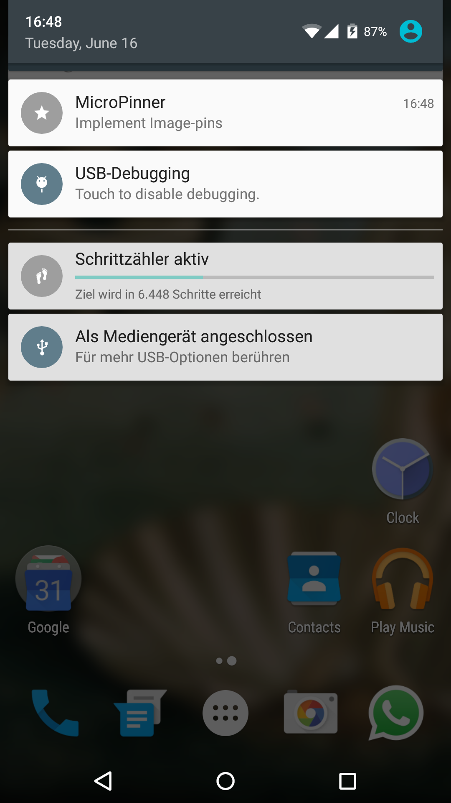
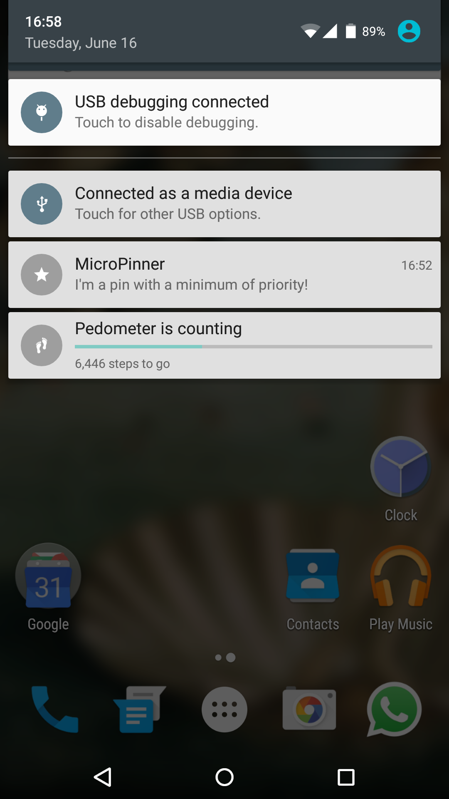

MicroPinner
MicroPinner
MicroPinner is a lightweight dialog-only application, which lets you pin text to your statusbar.
You can also customize the pins priority and visibility (Android 5.+ only).

Features
-
Material Design aligned
Design follows the Material Design Dialog guidelines. -
Lightweight
Weights deodexed less than 750kb. -
Zero battery & memory impact
It won't drain your battery nor your memory. No background-services, no background-processes. Incase it does, tell your SystemUI she's a b**ch. -
Backwards compatible
Works on Android 4.1 and up. Lower than 4.1 breaks priority feature. -
Permission free
It will neither spy on your SMS's, nor call it's mothership over network.
It just want to know when your devices finished its boot-procress, to restore your pins. -
Open source
The whole source-code is available here on Github. -
Restore functions
Pins are saved until you swipe them away.
To restore your pins for example after a reboot, simply open the dialog. -
Permanent pins
Declare your pins as permenent and delete them by clicking on them. -
Choosable priority
Give your pin the priority you think it deserves. -
Editable pins
Edit your pins easily by clicking on them.
Android 5.+ only
-
Choosable visibility
Hide your pin on the lockscreen by using Android 5's visibility-API: Choose between public, private and secret.
Screenshots


 
Changelog
-
Version: v1.0 (Initial release)
- date: 11th June 2015
- sha1 checksum: ce67e91f42bca5d9d927f73c7d423071f887ad59
- direct download: Github
-
Version: v1.1 (Disallow empty titles and let user decide if he wants to see the "new pin"-notification)
- date: 12th June 2015
- sha1 checksum: 3003cedb937a73f943e618c9f7cd3e82bc468e20
- direct download: Github
-
Version: v1.2 (Fix non-working visibility & priority)
- date: 12th June 2015
- sha1 checksum: a01095619f18e4d9f6b35065125e907f64246948
- direct download: Github;
-
Version: v1.3 (Reworked layout | German translation | MIN-priority | Persistent pins | Auto-capitalization | Hideable pin icon (you need to set the priority to min!))
- date: 16th June 2015
- sha1 checksum: 885f8ac5dfbf3ceabc1d6b37526ffc9b85b3d0cd
- direct download: Github
-
Version: v1.4 (Fast fix for multiple persistent notifications)
- date: 16th June 2015
- sha1 checksum: 0b95003458962e9124f460ded4b33cbaf2f930fd
- direct download: Github
-
Version: v1.5 (Implemented restore-functions)
- date: 02nd July 2015
- sha1 checksum: 52a5266009413e13e1228a7166e1b6523bd094ca
- direct download: Github
-
Version: 1.5.1 (Declare pin-restoring as experimental and add option to enable/disable)
- date: 12th July 2015
- sha1 checksum: 865fcfade343ef77bf1a93445feaa36df117fe6b
- direct download: Github
Questions / Issues / Bugs
Please check the FAQ first.
Build
This project is developed using JetBrain's IntelliJ IDEA 14.1 and the latest Gradle-wrapper. To compile MicroPinner, simply import this project into Android Studio or IntelliJ IDEA and press the build-button.
Todo
- Choosable icon (not sure about including icons - that would increase the application size about 3kb per image)
Create a FAQ(here) and a link inside the app- Choosable notification-category
- Choosable notification color
-
Allow hiding the pin-icon(implemented, available since v1.4 - simply set the priority to 'min') -
Allow persistent pins(implemented, available since v1.4) -
Implement min-priority(implemented, available since v1.4) - Implement image-pins
- (Code) Documentation
- Single-line pin (in progress but help needed, check issue #2)
License
Copyright (c) 2015 Lukas 'dotwee' Wolfsteiner The source-code of MicroPinner is licensed under the Do What The Fuck You Want To public license.